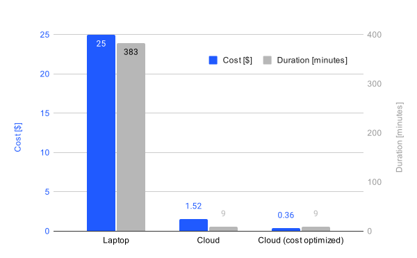

Processing Terabyte-Scale NASA Cloud Datasets with Coiled
Cross-posted from the Coiled blog. James Bourbeau is Lead OSS Engineer at Coiled, a company providing software and expertise for scalable Cloud computing built on Dask. Through the NASA Openscapes community, we support researchers using NASA Earthdata as they migrate their data analysis workflows to the Cloud. This Fall, Openscapes is partnering with Coiled to support us experimenting with another approach to Cloud access.
Amy Steiker, Luis Lopez, and Andy Barrett from NSIDC and Aronne Merrelli from the University of Michigan shared their scientific use cases which motivated this post.
We show how to run existing NASA data workflows on the cloud, in parallel, with minimal code changes using Coiled. We also discuss cost optimization.
People often run the same function over many files in cloud storage. This looks something like the following:
# Step 1: Get a list of all of our files (typically thousands of NetCDF files).
files = ...
# Step 2: Create a function to process each file.
# Then either return the processed result
# or save it to some external data store like S3.
def process(file):
result = ...
return result
# Step 3: Process all of the files.
results = []
for file in files:
result = process(file)
results.append(result)
# Step 4: Analyze results locally.
plot(results)This straightforward but important pattern occurs frequently in groups working with NASA Earthdata and NASA Distributed Active Archive Centers (DAACs) to move scientific workloads to the cloud. Here are some examples:
- Extract greenhouse gasses over urban areas from TROPOMI L2 data: TROPOMI measures trace gasses and aerosols relevant for air quality and climate. It generates a large volume of L2 data stored as millions of files on S3. In our particular project we’re interested in greenhouses over highly populated urban areas, and how they affect quality of life. We need to select those files over many cities and then construct a timeseries over them to see how air quality changes.
- Grid sea ice freeboard data from NASA’s ICESat-2 mission: This workflow from NSIDC (National Snow and Ice Data Center) researchers loads L3 sea ice freeboard HDF5 data, selects a lat-lon bounding box of interest, and regrids the dataset to the EASE-Grid v2 6.25 km projected grid using drop-in-the-bucket resampling. The resulting processed dataset is then written out to a local Parquet file to be used in further analysis. This is particularly valuable as it allows researchers to easily create their own specialized datasets with spatial and temporal resolutions relevant for their analysis.
In this post we’ll show how to run this same “function on many files” analysis pattern on the cloud with Coiled, which you can copy and modify for your own use case. We’ll also highlight cost optimization strategies for processing terabyte-scale data for fractions of a dollar.

Processing Locally
In this example we process many NetCDF files stored on S3 from the MUR Global Sea Surface Temperature NASA dataset to look at surface temperature variation over the US Great Lakes region:
import os
import tempfile
import earthaccess
import numpy as np
import xarray as xr
# Step 1: Get a list of all files.
# Use earthacess to authenticate and find data files (total of 500 GB).
granules = earthaccess.search_data(
short_name="MUR-JPL-L4-GLOB-v4.1",
temporal=("2020-01-01", "2021-12-31"),
)
# Step 2: Create a function to process each file.
# Load and subset each data granule / file.
def process(granule):
results = []
with tempfile.TemporaryDirectory() as tmpdir:
files = earthaccess.download(granule, tmpdir)
for file in files:
ds = xr.open_dataset(os.path.join(tmpdir, file))
ds = ds.sel(lon=slice(-93, -76), lat=slice(41, 49))
cond = (ds.sea_ice_fraction < 0.15) | np.isnan(ds.sea_ice_fraction)
result = ds.analysed_sst.where(cond)
results.append(result)
return xr.concat(results, dim="time")
# Step 3: Run function on each file in a loop
results = []
for granule in granules:
result = process(granule)
results.append(result)
# Step 4: Combine and plot results
ds = xr.concat(results, dim="time")
ds.std("time").plot(figsize=(14, 6), x="lon", y="lat")This specific example uses earthacess to authenticate with NASA Earthdata and download our dataset (~500 GB of NetCDF files) and Xarray to load and select the region of the data we’re interested in, but we’ve seen many different approaches here, including file formats like HDF, Zarr, and GeoTIFF, as well as libraries like Xarray, rasterio, and pandas. In each case though the underlying pattern is the same.
We then combine the results from processing each data file and plot the results.
Running this locally on my laptop takes ~6.4 hours and costs NASA ~$25 in data egress costs (based on a $0.05/GB egress charge rate – normal is $0.10/GB, but presumably NASA gets a good deal).
Processing on the Cloud with Coiled
Let’s run the exact same analysis on the cloud. Running on the cloud helps in a couple of ways:
- Data Proximate Computing: Running computations closer to where the data is stored increases performance and avoids data transfer costs.
- Scale: Distributing the processing over many machines in parallel lets us tackle larger volumes.
Using Coiled to run the same workflow on the cloud involves lightly annotating our process function with the @coiled.function decorator:
import coiled
@coiled.function(
region="us-west-2", # Run in the same region as data
environ=earthaccess.auth_environ(), # Forward Earthdata auth to cloud VMs
)
def process(granule):
# Keep everything inside the function the same
...This tells Coiled to run our processing function on a VM in AWS and then return the result back to our local machine.
Additionally, we switch to using the Coiled Function .map() method (similar to Python’s builtin map function) to run our process function across all the input files in parallel:
# Step 3: Run function on each file in a loop
# results = []
# for granule in granules:
# result = process(granule)
# results.append(result)
results = process.map(granules) # This runs on the cloud in parallelWith these two small code changes, the same data processing runs in parallel across many VMs on AWS. The runtime drops to ~9 minutes (a factor of ~42x speedup) and costs ~$1.52 (a factor ~16x less).
Optimizing Costs
Processing 500 GB of data costs us $1.52. This is cheap.
We bring this cost down further to $0.36 with the following techniques:
- Spot: Use spot instances, which are excess capacity offered at a discount.
- ARM: Use ARM-based instances, which are less expensive than their Intel-based equivalents, often with similar, or better, performance.
- Instance Type Selection: Use single-core instances (only available when using ARM), because this particular computation doesn’t require large computing resources.
With this additional configuration made to the Coiled Functions decorator, our full cost-optimized cloud workflow looks like the following:
import os
import tempfile
import coiled
import earthaccess
import numpy as np
import xarray as xr
# Step 1: Get a list of all files.
# Use earthacess to authenticate and find data files (total of 500 GB).
granules = earthaccess.search_data(
short_name="MUR-JPL-L4-GLOB-v4.1",
temporal=("2020-01-01", "2021-12-31"),
)
# Step 2: Create a function to process each file.
# Load and subset each data granule / file.
@coiled.function(
region="us-west-2", # Run in the same region as data
environ=earthaccess.auth_environ(), # Forward Earthdata auth to cloud VMs
spot_policy="spot_with_fallback", # Use spot instances when available
arm=True, # Use ARM-based instances
cpu=1, # Use Single-core instances
)
def process(granule):
results = []
with tempfile.TemporaryDirectory() as tmpdir:
files = earthaccess.download(granule, tmpdir)
for file in files:
ds = xr.open_dataset(os.path.join(tmpdir, file))
ds = ds.sel(lon=slice(-93, -76), lat=slice(41, 49))
cond = (ds.sea_ice_fraction < 0.15) | np.isnan(ds.sea_ice_fraction)
result = ds.analysed_sst.where(cond)
results.append(result)
return xr.concat(results, dim="time")
# Step 3: Run function on each file in parallel
results = process.map(granules) # This runs on the cloud in parallel
# Step 4: Combine and plot results
ds = xr.concat(results, dim="time")
ds.std("time").plot(figsize=(14, 6), x="lon", y="lat")and, while code runtime stays the same at ~9 minutes, cost drops to ~$0.36 (a factor of ~70x less than running locally).
Summary
We ran a common data subsetting-style workflow on NASA data in the cloud with Coiled. This demonstrated the following:
- Easy: Minimal code changes to migrate existing code to run on the cloud.
- Fast: Acceleration of the workflow runtime by ~42x.
- Cheap: Cost reduction of ~70x.
We hope this post shows that with just a handful of lines of code you can migrate your data workflow to the cloud in a straightforward manner. We also hope it provides a template you can copy and adapt for your own analysis use case.
Want to run this example yourself?
- Get started with Coiled for free at coiled.io/start. This example runs comfortably within the free tier.
- Copy and paste the code snippet above.
Going to AGU 2023? Come by the Coiled booth and say hi (right by the entrance next to Google).
Acknowledgements
This work was done in collaboration with NASA Openscapes, a community supporting research teams’ cloud migration with different Cloud environments and technologies, including Coiled.
We’d also like to thank Amy Steiker, Luis Lopez, and Andy Barrett from NSIDC and Aronne Merrelli from the University of Michigan for sharing their scientific use cases which motivated this post.
Citation
@online{bourbeau of coiled2023,
author = {Bourbeau of Coiled, James},
title = {Processing {Terabyte-Scale} {NASA} {Cloud} {Datasets} with
{Coiled}},
date = {2023-11-07},
url = {https://openscapes.org/blog/2023-11-07-coiled-openscapes},
langid = {en}
}